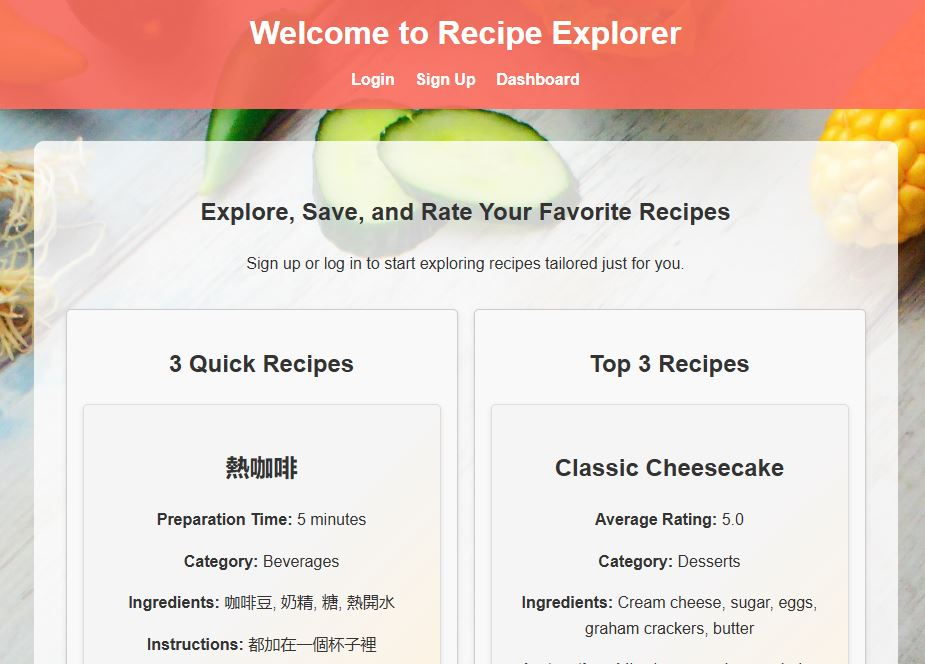
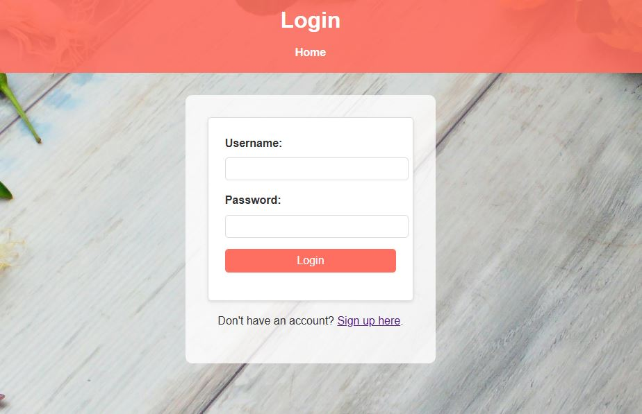
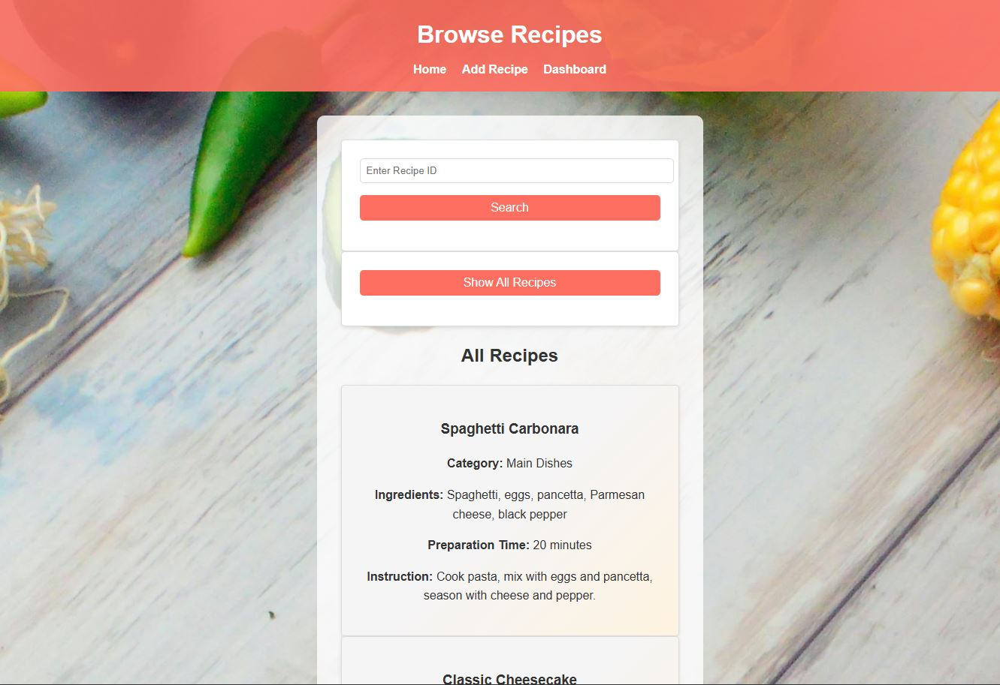
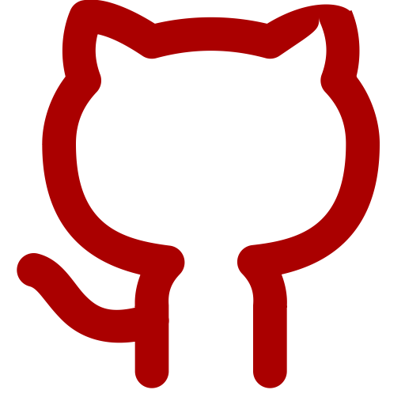
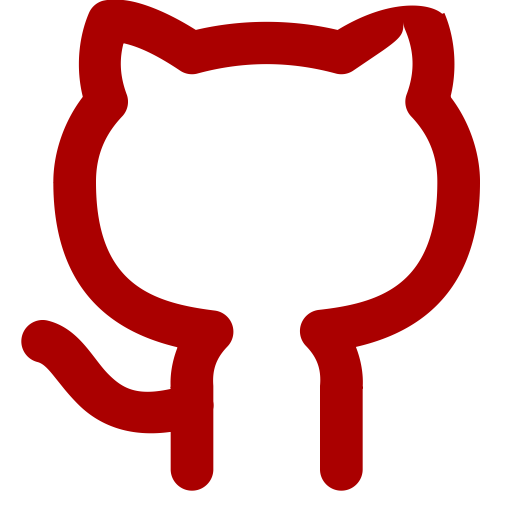

  
 
View on GitHub

View on GitHub
Overview:
This Recipe Search App allows users to discover and explore recipes based on selected ingredients and preferred cuisines.
It fetches real-time recipe data from a public API, offering dynamic filtering and detailed recipe information, including ingredients, steps, and nutritional details.
The app includes secure user registration and login features, allowing users to save their favorite recipes.
Key Features:
- Search recipes by filtering ingredients and cuisine types.
- Responsive design for usability on mobile and desktop devices.
- Secure user authentication using JWT and session management.
- User registration with password hashing via bcrypt and werkzeug.security.
- Ability to save and revisit favorite recipes for registered users.
- Interactive UI built with HTML/CSS, styled for readability and ease of use.
Technologies Used:
- Frontend: HTML5, CSS3
- Backend: Flask, Python, SQLAlchemy
- Database: MySQL (via MySQL Workbench, mysqlclient, pymysql)
- Authentication & Security: PyJWT, bcrypt, werkzeug.security, Flask sessions
- Environment & Config: python-dotenv
- HTTP Requests: requests library
- API: Integration with a public recipe API
Challenges Faced:
- Parsing complex nested JSON from the recipe API and presenting it cleanly.
- Managing secure user sessions and token-based authentication (JWT).
- Implementing dynamic search filters without compromising performance.
- Ensuring compatibility across devices through responsive design.
- Handling database relationships for storing user preferences and recipe data.
Outcome:
The project resulted in a functional, secure, and user-friendly web application that bridges API data with database-driven user experiences.
It demonstrates full-stack development skills, secure coding practices, and thoughtful UI/UX design.
It serves as a solid foundation for more advanced food discovery tools or meal planning platforms.